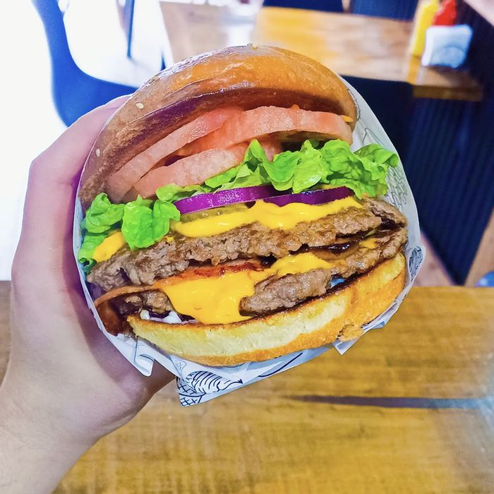

TU PRÓXIMA PARADA · MAIPÚ
EL HAMBRE
TIENE UNA
RUTA.
Hamburguesas contundentes, churrascos con todo y el sabor que te hace volver.
ENCUENTRA TU FAVORITA ↗HECHAS PARA
DISFRUTAR SIN APURO.RC
66
DISFRUTAR SIN APURO.RC
66

SIN RODEOS.
CON TODO.
CON TODO.
EL CAMINO DEL SABOR ↗
DESCUBRE LA RUTA 66
EL SABOR,
CAPA POR CAPA.
Tocino, cheddar, cebolla morada y mayonesa. Separa los ingredientes y descubre lo que lleva tu próxima parada.
RUTA 66 + PAPAS FRITASSimple $5.300 · Doble $6.990
ELEGIR MI RUTA ↗RUTA 66 / POR DENTRO01 — 05
01 / PAN
02 / TOCINO, CEBOLLA & MAYO
03 / CHEDDAR
04 / HAMBURGUESA
05 / PAN BASE
Desliza, toca o usa las flechas del teclado.
Imagen ilustrativa03 / NOS VEMOS EN LA CENTRAL
TODOS LOS CAMINOS
LLEVAN AL SABOR.
ENCUÉNTRANOS
Av. Central Gonzalo Pérez Llona 497
Local 3 · Maipú
¿HOY TE QUEDAS EN CASA?
Tenemos despacho a domicilio.
Consulta la cobertura por WhatsApp.